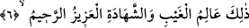

Şeyh Nesefî (k.s.)’un Keşfü’l-hakâik adlı eserinde şöyle denilir: “Bil ki, nefs-i
cüz’înin evci/çıkabileceği en yüksek zirvesi ve hazîzı/inebileceği en alt sınırı vardır.
Zirvesi, felekü’l-eflâk (felekler feleği) ve âlemi kuşatmış olan yedinci felektir. En alt
sınırı ise âlemin merkezi olan toprak/yeryüzüdür. Nefsin nüzûlü/inişi vardır,
urûcu/yükselişi vardır. Onun inişi, yeryüzüne gelmesidir “Melekler ve Ruh (Cebrail),
iner dururlar.” (el-Kadr, 97/4). Yükselişi ise felekü’l-eflâke geri dönmesidir
“Melekler ve Ruh (Cebrâil), yükselip çıkarlar.” (el-Meâric, 70/4). Bu geliş ve gidiş
bin yıldan az, elli bin yıldan çok değildir. “Melekler ve Cebrâil, süresi (dünyâ senesi
ile) elli bin yıl olan bir günde O’na yükselip çıkarlar.” (el-Meâric, 70/4)”
6. İşte, görülmeyeni de görüleni de bilen, mutlak galip ve merhamet sâhibi O’dur.
“İşte, görülmeyeni” yaratılmışlara gizli kalan şeyleri “de görüleni” onların gözleri
önünde ve açık olan şeyleri “de bilen,” gizli açık her şeyi, gerektiği şekilde idâre edip
yöneten “mutlak galip” Azîz; yaptığı her işte tam hükümrânlık sâhibi “ve merhamet
sâhibi” Rahîm’dir; takdir ve tedbirinde kullarına son derece merhametli olan “O’dur.”
yaratma, hükmetme, dostluk ve yardım tekelinde bulunma ve kâinâtın işlerini yönetip
idâre etmek gibi daha nice vasıflara sâhip olan şânı yüce Allah’tır.
Kâşifî der ki: “Allah Teâlâ dünyâ ve âhiret işlerini bilir. Veya olmuş olan ve olacak
olanları bilir.”
Büyüklerden biri şöyle demiştir: “Gayb/görülmeyen” ruhtur; “şehâdet/görülen” ise
nefis ve bedendir.”
Allâh’ın mutlak galip ve merhamet sâhibi olmasında, O’nun zorunluluktan değil lütuf
ve ihsânından dolayı kulları için en faydalı olanı gözettiğine işâret vardır.
[137]. Buhârî, Enbiya 48; Müslim, Fedâil 145.
[138]. Keşfü’l-hafâ, I, sh. 397, Hadis no:1069.